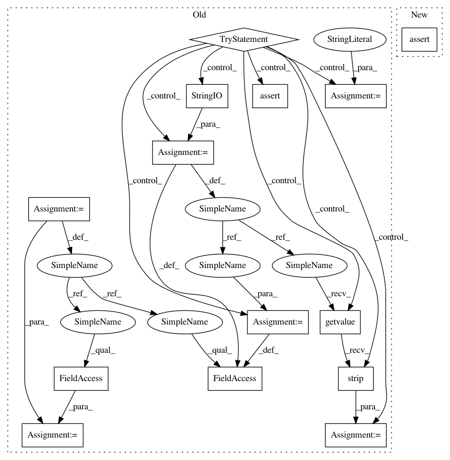

02d92ef958d894bb03e43b752e0b39ed7b3bec17,skbio/draw/tests/test_distributions.py,DistributionsTests,test_grouped_distributions_insufficient_colors,#DistributionsTests#,367
Before Change
grouped_distributions() should work even when there aren"t
enough colors. We should capture a print statement that warns the
users.
saved_stdout = sys.stdout
try:
out = StringIO()
sys.stdout = out
grouped_distributions("bar", self.ValidTypicalData, [1, 4, 10, 11],
["T0", "T1", "T2", "T3"],
["Infants", "Children", "Teens"], ["b", "r"],
"x-axis label", "y-axis label", "Test")
output = out.getvalue().strip()
exp = ("There are not enough markers to uniquely represent each "
"distribution in your dataset. You may want to provide a "
"list of markers that is at least as large as the number "
"of distributions in your dataset.")
// output may contain other text, such as warning messages from
// matplotlib.
self.assertTrue(exp in output)
finally:
sys.stdout = saved_stdout
def test_grouped_distributions_scatter(self):
Should return a valid scatterplot Figure object.
fig = grouped_distributions("scatter", self.ValidTypicalData,
[1, 4, 10, 11], ["T0", "T1", "T2", "T3"],
After Change
["T0", "T1", "T2", "T3"], ["Infants", "Children", "Teens"],
["b", "r"], "x-axis label", "y-axis label", "Test")
npt.assert_warns(RuntimeWarning,
grouped_distributions,
*args)
def test_grouped_distributions_scatter(self):
Should return a valid scatterplot Figure object.
fig = grouped_distributions("scatter", self.ValidTypicalData,
In pattern: SUPERPATTERN
Frequency: 3
Non-data size: 14
Instances
Project Name: biocore/scikit-bio
Commit Name: 02d92ef958d894bb03e43b752e0b39ed7b3bec17
Time: 2014-03-19
Author: jorgecanardo@gmail.com
File Name: skbio/draw/tests/test_distributions.py
Class Name: DistributionsTests
Method Name: test_grouped_distributions_insufficient_colors
Project Name: biocore/scikit-bio
Commit Name: 02d92ef958d894bb03e43b752e0b39ed7b3bec17
Time: 2014-03-19
Author: jorgecanardo@gmail.com
File Name: skbio/draw/tests/test_distributions.py
Class Name: DistributionsTests
Method Name: test_set_figure_size_long_labels
Project Name: biocore/scikit-bio
Commit Name: 02d92ef958d894bb03e43b752e0b39ed7b3bec17
Time: 2014-03-19
Author: jorgecanardo@gmail.com
File Name: skbio/draw/tests/test_distributions.py
Class Name: DistributionsTests
Method Name: test_grouped_distributions_insufficient_symbols